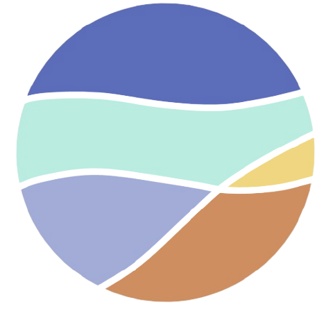

Hybrid modelling of compound floods with BlueMath
HySfincs: sea, river and rain in the Santoña estuary. From 100 SFINCS simulations to 300 years of flood maps, in your browser and in your notebooks.

Geomatics and Ocean Engineering Group (GeoOcean) · Universidad de Cantabria
Four steps, four notebooks
Each block is a short talk with interactive demos, then you run the notebook. About two hours in total.
BlueMath & the case
Why hybrid models, and the Santoña estuary.
Sample & simulate
LHS + MDA pick 100 days, SFINCS floods them, PCA compresses the maps.
LHS · MDA · PCASurrogate
An RBF learns the flood map of any day in milliseconds.
RBFClimate emulator
Weather types and copulas generate 300 years of plausible days.
KMA · copulasFlood climate
110,000 days through the surrogate: return periods and flood maps.
HyFloodUSE_PRETRAINED = True at the top of notebooks 02 and 04: they then read our models from notebooks/pretrained/.Everything is ready in the browser
1 · Open Codespaces
On github.com/GeoOcean/BlueMath_Course_InterJIA, click Code → Codespaces → Create. Wait about a minute: everything is installed.
2 · Run the notebooks in order
Open notebooks/01 and choose the Python kernel in /opt/conda. Then 02, 03 and 04.
3 · Stuck?
Set USE_PRETRAINED = True at the top of notebooks 02 and 04 (run_sfincs = False in 01) and continue with our results.
Small pieces.
Bigger ocean science.
BlueMath is an open-source Python framework for the statistical analysis and simulation of coastal climate hazards. Years of research broken into small, reusable pieces that anyone can snap together into methods and climate services.
Most coastal research is hard to reuse
of researchers failed to reproduce someone else's published research.
failed to reproduce their own experiments.
of the analysed papers provided their code.
Research slows down when every new method has to be rebuilt from scratch before it fits into an existing workflow. BlueMath turns that work into shared pieces that are written once, tested, and reused.
Pieces snap into methods. Methods stack into services.
One image, every machine
Installed once, the same everywhere: same results on any machine. Platforms such as EDITO run models the same way.
HYDRA: hydrology and climate in Python
From raw data to scenarios, simulations and risk products, in reproducible workflows.
Data
Automatic downloads: precipitation, discharge, climate change, soils
Climate analysis
Extremes, regional frequency, copulas, spatial interpolation
Stochastic generation
Synthetic series and multisite rainfall
Modelling
Hydrological and hydraulic models, automated
DATA SOURCES
ERA5 · GPM · AEMET · Meteostat · GloFAS · GRDC · CMIP6 · SoilGrids
MODELS
HEC-HMS · SWAT+ · HEC-RAS · SFINCS
Today the river discharge and the rain come as files. With HYDRA in BlueMath, the same SFINCS workflow could start from the downloads and the stochastic rainfall.
Expensive physics where it matters, statistics everywhere else
Sample
Cover all plausible days
LHSSelect
Keep the 100 most different
MDASimulate
Run the physics on those 100 days only
SFINCSReduce
Flood maps → a few numbers
PCALearn
Forcing → numbers → map
RBFEmulate
Thousands of years of days → flood statistics
KMA · copulasSFINCS on the 110,673 emulated days (~2 s each)
SFINCS on the 100 selected days, in parallel on a laptop
The surrogate on the 110,673 days
The Santoña estuary floods from three sides
- The sea: tide + storm surge + wave setup enter through the mouth, between El Puntal and Santoña.
- The river: the Asón brings up to ~1,200 m³/s into the south of the estuary.
- The rain: falls on the whole domain, marshes and valleys included.
Hover the map: elevation from the 20 m topobathymetry (UTM 30N). The dashed area is the SFINCS domain, closed at the mouth.
Ten years of daily drivers
Are the drivers related?
River and rain go together: rain generates the runoff. A big flood with no rain is not physical.
The sea is driven by the tide, the surge and the waves: almost independent of the river.
Sample and simulate
We cannot run SFINCS for every possible day. Which days do we run?
Random vs Latin Hypercube
Random sampling leaves gaps and clusters, by chance.
LHS splits every variable into N equal strata and puts exactly one sample in each row and each column: one shaded cell per row and per column.
Every value range is covered, whatever N. Here the samples sit at the centre of their cells; in bluemath-tk they are placed at random inside them. In 3D (TWL, Q, rain) the idea is the same.
LHS(num_dimensions=3, seed=1) → 20,000 samples.Keep it physical
The LHS samples Q and rain independently: it proposes a river flood on a dry day.
We keep only the samples inside the convex hull of the observed (Q, rain) pairs.
The TWL is left free: high tide + river flood stays possible.
Maximum Dissimilarity: the most different days
- Start from an extreme point.
- For every point, compute its distance to the closest point already selected.
- Select the point with the largest of those distances.
- Repeat until you have N.
The selection covers the edges first: exactly where the extremes are. Random selection mostly picks the crowded centre.
100 days for SFINCS
The real selection of the notebook: MDA on the 13,457 plausible scenarios, normalised to [0, 1].
Move the slider: the first cases are the corners of the space. Drag the plot to rotate it.
MDA(num_centers=100).fit(data, normalize_data=True)From one daily value to a SFINCS forcing
Sea: a triangle peaking at hour 12. The tide is symmetric around the mean level and the residual (surge + setup) is nearly constant over a day, so
River: the SCS unit hydrograph scaled to the daily peak, shifted by a random lag of ±2–6 h.
Rain: the daily depth spread uniformly over the 24 h.
A fast flood model, thanks to subgrid
SFINCS (Deltares) solves simplified shallow-water equations: fast enough for compound floods over large areas.
- 100 m computational grid, 175 × 127 cells
- Subgrid tables from the 20 m DEM: each cell knows how its volume and wet area grow with the level
- Water level imposed on the mouth line, Asón at the southern edge, rain on every cell
- ~2 s per day of simulation
Move the water level: a coarse model without subgrid sees the cell as either dry or wet; the subgrid cell fills gradually, like the real terrain.
Each driver floods a different place
Principal components in two dimensions
PCA finds the directions where the data vary the most. Rotate the axis: the variance of the projections is largest along PC1.
With correlated variables, one direction captures almost everything, and the second adds little.
2,910 cells → 8 numbers
Your turn: notebook 01
- Look at the historical days and build the LHS + hull + MDA selection.
- Plot the forcing of a few cases. Which lag did each case get?
- Build the SFINCS model and run the 100 cases (a few minutes).
- Compare the flood maps of the six situations.
- Fit the PCA: how many components do you need?
run_sfincs = False: the notebook uses our results.You should see:
A flood model in milliseconds
An interpolator learns the 100 SFINCS runs and predicts the flood map of any day.
Radial basis functions in one dimension
The prediction is a weighted sum of bumps centred at the training points, plus a linear trend:
The weights make f pass exactly through every training point. σ sets how far each point reaches.
Click on the plot to add a training point. bluemath-tk optimises σ for each output.
From the forcing to a flood map
3 numbers
TWL, Q, rain, normalised to [0, 1]
8 PCs
One RBF per principal component, each with its own σ
RBFWater level
mean + Σ PCk · EOFk on the 100 m grid
PCAWater depth
max(level − DEM, 0) on the 20 m DEM
hydromt-sfincsFlood map
In milliseconds, for any day
Why water level, not depth?
The level is a smooth surface defined in every active cell: PCA and RBF handle it well. The DEM adds the sharp wet/dry edges afterwards.
What the RBF cannot do
It interpolates between the 100 SFINCS days. Outside their range (bigger storms than ever simulated) it is not reliable.
Your own flood, computed in this browser
How many SFINCS runs do we need?
Your turn: notebook 02
- Fit the RBF from the forcing to the 8 PCs.
- Run the 5-fold cross-validation and look at the error vs the number of SFINCS runs.
- Compare SFINCS and RBF for the worst and the median case. Where does the surrogate fail?
- Predict your own days: change
new_days.
Lost? USE_PRETRAINED = True
Hundreds of years of weather
Ten years of data cannot tell us the 100-year flood. We simulate plausible days that keep the physics of the weather.
From weather patterns to daily drivers
Annual weather types
The large-scale ocean-climate state of each year
AWTDaily weather types
25 patterns of sea level pressure around Iberia, simulated day by day
KMA · ALROne copula per type
Rain, surge + setup and river discharge sampled together
Gaussian copula3 × 100 years
110,673 plausible days, with the right dependence
data/xds_output.nc) is given. In notebook 03 you fit the copulas and simulate the drivers. The tide is added in notebook 04.25 daily weather types
A Gaussian copula: dependence and marginals, separately
One copula per weather type
Synthetic weather, validated
Your turn: notebook 03
- Load the weather types and join them with the daily drivers.
- Fit one Gaussian copula per type and look at its correlations.
- Simulate 3 × 100 years from the simulated weather types.
- Validate: histograms per type, scatter, QQ and annual maxima.
ECDF kernel instead of KDE for a variable: what happens to the extremes?It writes outputs/simulated_precip_ss_q.nc for notebook 04.
300 years of floods in seconds
The emulator gives the days, the surrogate gives the maps. Together: flood statistics.
Adding the tide back
Return periods from 300 emulated years
The flood map of any return period
Two places, two different floods
Your turn: notebook 04
- Rebuild the TWL = tide + surge + setup of every emulated day.
- Check how many days fall outside the training range.
- Run the 110,673 days through the surrogate and get the annual maxima.
- Plot the return-period curves and the 10- and 100-year maps.
- Which driver makes the annual maximum at each location?
What we built today
SFINCS runs, chosen with LHS + MDA
principal components per flood map (99.9%)
emulated days through the RBF surrogate
year flood map, without fitting an extreme-value distribution
The same recipe works for waves (HySwash, HyBeat), cyclones (SHyTCWaves) or any expensive model: simulate a few, learn them, emulate many.
Where to be careful
The training range
The RBF interpolates. Emulated days above the simulated maxima are clipped, and the rarest floods are underestimated. Add SFINCS runs at the edges.
Simplified forcing
One triangle, one hydrograph, uniform rain and a random lag per day: the timing of the drivers matters for compound floods.
The emulator
300 years from 10 years of local data and 40 of weather types. The tide is drawn independently of the weather.
A changing climate
Add sea level rise to the TWL, or drive the emulator with weather types from climate projections.
Start with one piece.
Clone the repositories, pick a piece, and build something bigger on top of it.
Contribute to BlueMath
Develop code, use and test the methods on your coast, bring computing power, start a project, host a course. Open an issue or a pull request.
Credits
BlueMath toolkit (GeoOcean): LHS, MDA, PCA, RBF and the climate emulator. SFINCS and HydroMT-SFINCS (Deltares). Licensed GPL-3.0.